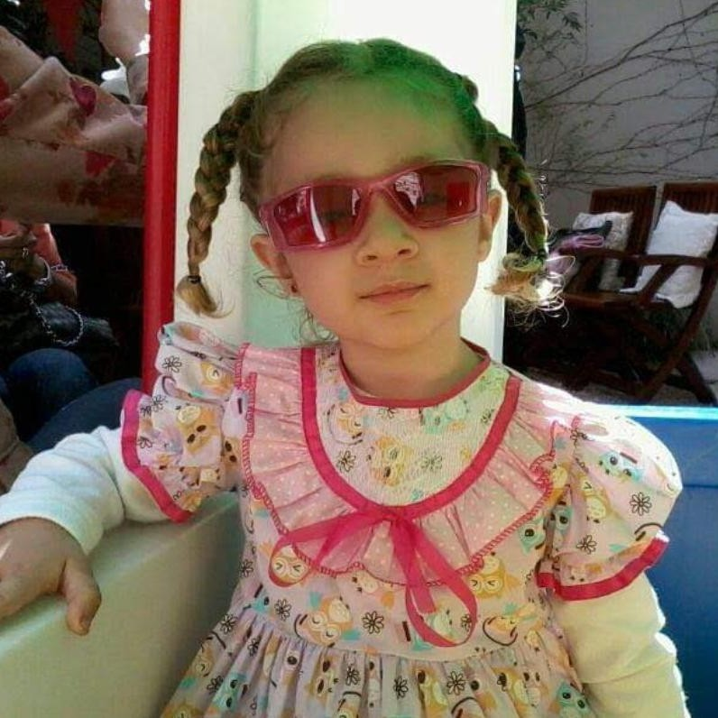
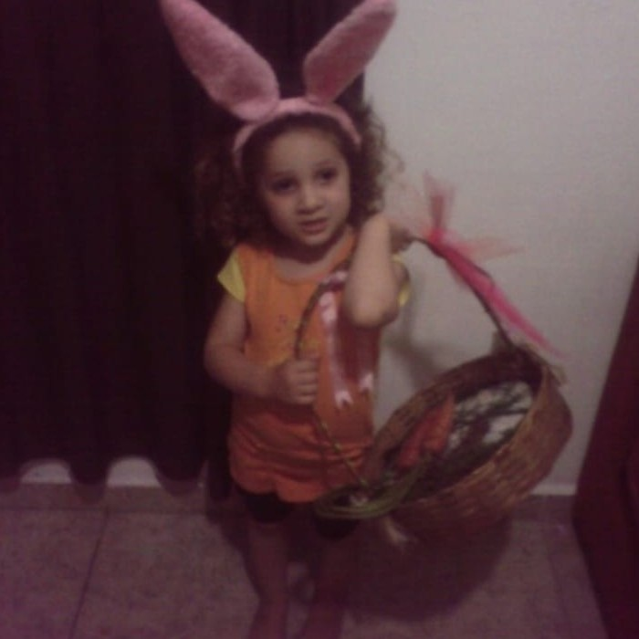
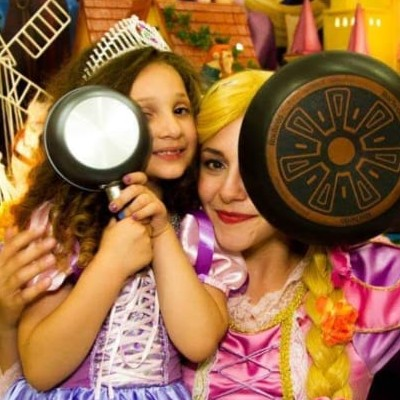
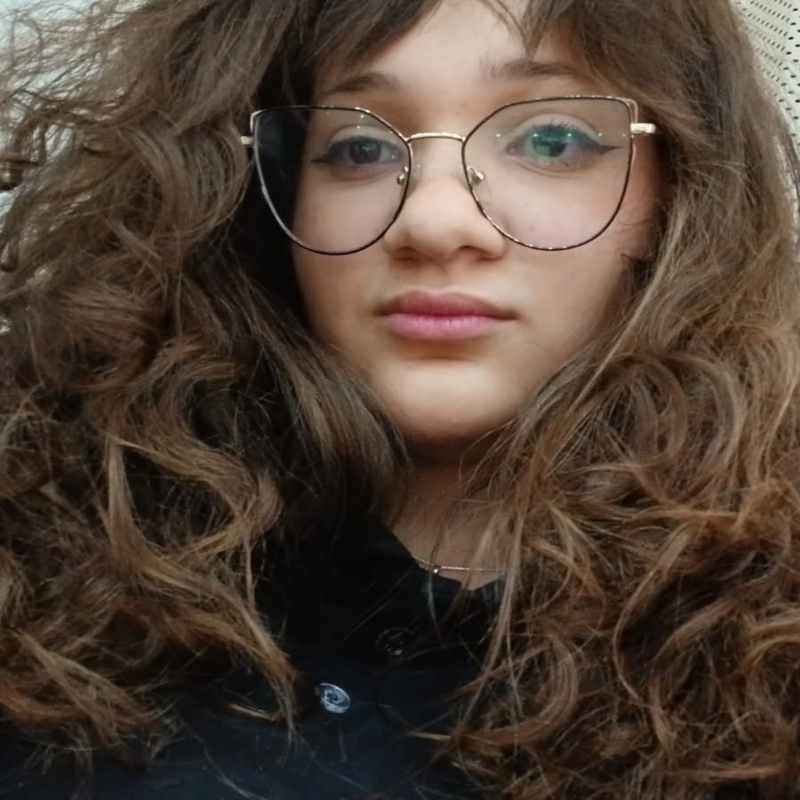
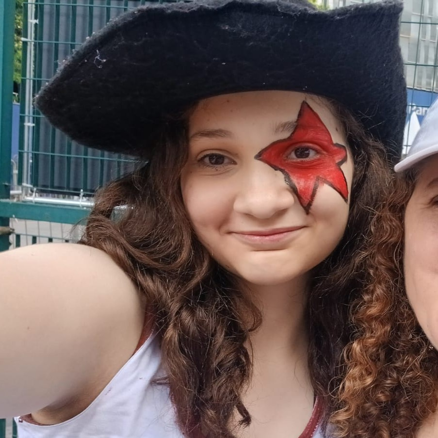

Meu nome completo é Bianca Bazoni Macedo, nasci no dia 18/10/2010 e atualmente tenho 16 anos. Moro com meus pais na zona norte da capital de São Paulo, faço esportes como corrida de rua, vôlei e academia. Sou filha única e não tenho animais de estimação. Nos feriados e aniversários eu vou para São Caetano com meus pais para ver minha família que mora por lá. Costumo viajar bastante para o interior para ver meus tios e para a praia, que é um dos meus lugares favoitos que já fui. Gosto bastante de ler livros e ver séries. Minha cor favorita é rosa e meu passatempo favorito é correr e ler livros, ambos escutando música.



Essa sou eu atualmente.


Curiosidades sobre mim
Meu número da sorte é 3.
Tenho muito apego a coisas que contenham borboletas, tanto que sempre uso um pingente de uma.
ADORO montar playlists, mesmo que for apenas para uma viagem de duas horas.
Troquei pulseira da amizade com uma das minhas autoras favoritas!
Já apareci em telão de show no Allianz Parque.
Uma das especialidades que eu tenho no escoteiro é de mitologia (nível 1), primeiros socorros e socorrismo (ambas nível 2).
Nunca saí do estado de São Paulo, mas alguns lugares que visitei no estado e que me encantei foram: (Clique nas fotos para ver seu perfil na wikipedia!)